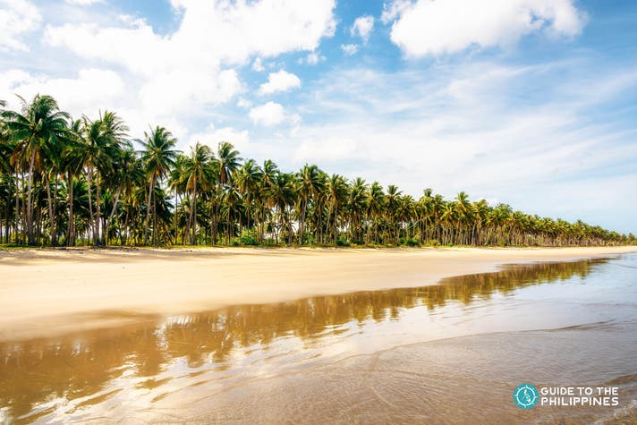
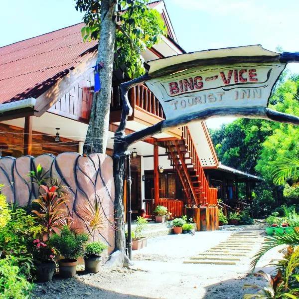
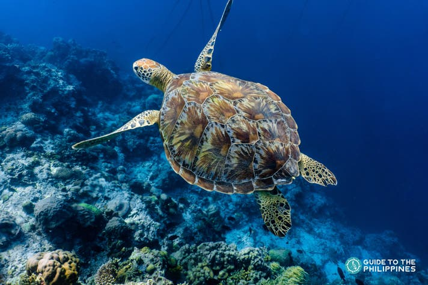

biodiversity Exploration
- San Vicente boasts the renowned Long Beach, a breathtaking 14-kilometer expanse of powdery white sand and turquoise waters.
- This pristine coastline, flanked by lush coconut trees and rolling hills, is not only the longest white sand beach in the Philippines but also a serene retreat free from the crowds typical of more commercialized destinations. Its unspoiled beauty and tranquil ambiance make it a hidden paradise for those seeking a genuine slice of tropical bliss.
Longest White Sand Beach

- San Vicente is emerging as a rising gem in Palawan, celebrated for its pristine beaches and untouched natural landscapes. Unlike the more developed and bustling destinations of El Nido and Coron, San Vicente remains relatively uncommercialized, offering a peaceful retreat where visitors can immerse themselves in its raw, unspoiled charm. This serene destination is perfect for those seeking tranquil beaches, vibrant marine life, and a genuine escape into nature.
Emerging Tourism Destination

- The waters surrounding San Vicente are a vibrant haven of marine biodiversity, showcasing thriving coral reefs, graceful sea turtles, and colorful schools of tropical fish. These underwater ecosystems provide opportunities for snorkeling and diving, offering visitors an up-close view of Palawan's rich aquatic life. The area’s pristine marine environment reflects its commitment to conservation, making it an ideal spot for nature enthusiasts and marine explorers alike.
Diverse Marine Life
